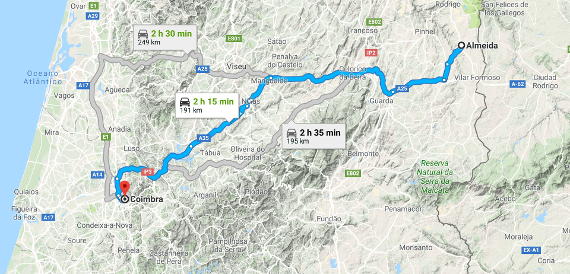
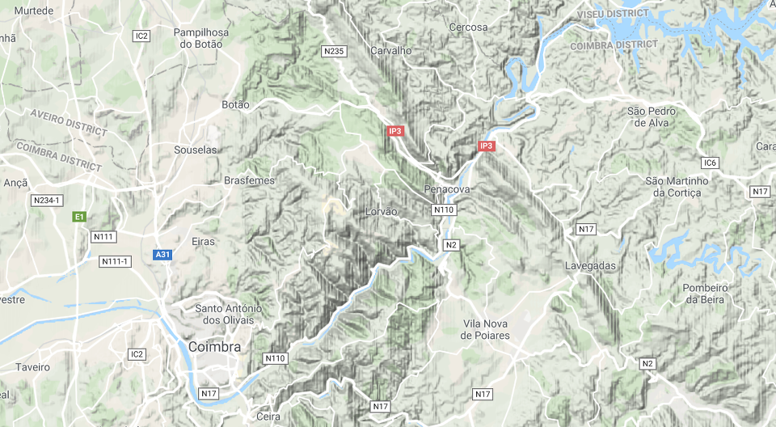
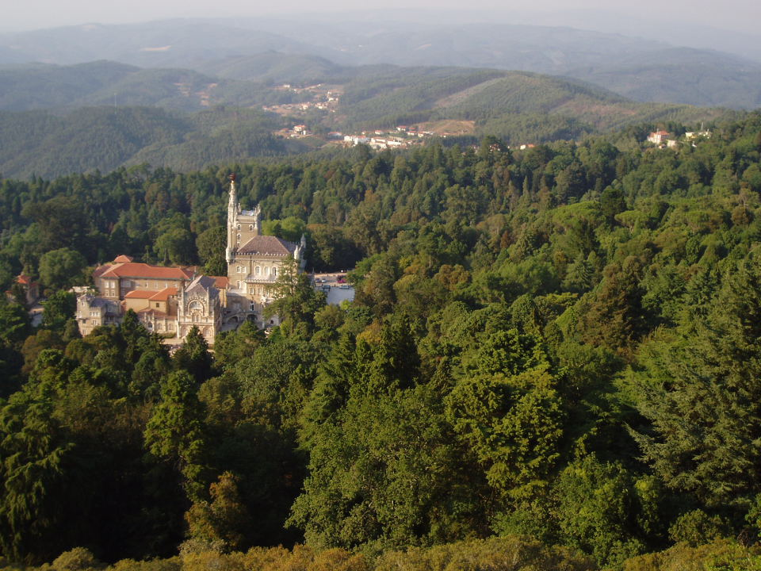
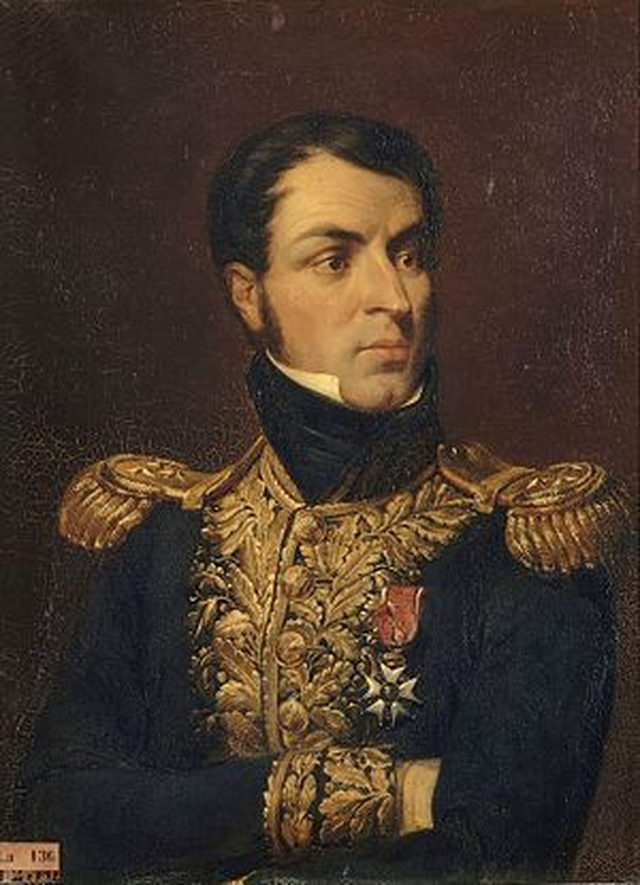

부사쿠(Bussaco) 전투 (1) - 사자는 방심하지 않는다
게시: 2018-11-12T06:30:00+09:00
탄약고 폭발로 인한 알메이다 요새의 갑작스러운 함락은 웰링턴을 크게 당황시킬만 했습니다. 하지만 웰링턴은 그렇게까지 당황하지는 않았습니다. 비록 생각보다 너무 일찍 함락되긴 했지만 어차피 알메이다의 함락은 예견되었던 것이고, 시우다드 로드리고의 스페인군이 분전해준 덕분에 방어 준비는 이미 충분히 되어 있었거든요. 문제는 그 방어 준비라는 것의 본질이었습니다.
웰링턴의 방어전략은 간단했습니다. 후퇴였지요. 그는 기세등등한 프랑스군과 싸울 생각이 전혀 없었습니다. 그는 그 일대의 주민들에게 소개령을 내리고 게속 후퇴했습니다. 군대가 후퇴하면서 주민들에게까지 소개령을 내리는 것은 당시 유럽에서는 매우 드문 일이었습니다. 웰링턴이 그런 명령을 내린 것은 식량 때문이었습니다. 그는 식량을 현지 조달하는 프랑스군의 약점은 보급이고 프랑스군이 제풀에 꺾이도록 만들기 위해서는 그들의 진격 예상지에서 밀가루 한줌도 남겨둬서는 안된다고 생각했습니다. 주민들이 있는 곳에는 반드시 식량이 있기 마련이었으므로 그는 주민들에게 소개령을 내렸던 것입니다. 하지만 대부분이 농민이었던 주민들에게 삶의 터전인 농토와 집을 버리고 알아서 어디로든 사라지라는 것은 웰링턴의 깔끔한 사령부 탁자에서나 통하는 이야기였습니다. 대부분의 농민들은 집을 버리지 않았고, 당연히 자신들이 먹을 식량도 마루바닥 밑에 감춰둔 상태였습니다. 포르투갈 농부들의 소박한 기대와는 달리 프랑스군은 그렇게 농민들이 감춰둔 식량을 찾아내는데는 도사였고, 프랑스군은 그런 식량들을 먹어치우며 계속 전진했습니다.

(알메이다에서 쿠임브라로 향하는 길입니다. 쿠임브라 서쪽에 늘어선 산맥이 보이십니까 ? 현대의 지도이긴 합니다만, 그럼에도 불구하고 맨 위의 크게 우회하는 도로가 아래의 두 도로보다 별로 오래 걸리지 않는 것을 보면 저 산맥이 상당히 험하다는 것을 짐작하실 수 있습니다.)
손자병법에도 원정군은 보급 문제 때문에 전투를 서두를 수 밖에 없다는 말이 있지요. 따라서 손자병법을 읽지도 않은 웰링턴이 그런 후퇴 및 초토화 전략을 생각해낸 것은 무척 칭찬할 만한 일이긴 했습니다. 그러나 포르투갈은 중국이 아니었고 러시아는 더더욱 아니었습니다. 좁은 포르투갈에서 언제까지고 후퇴를 할 수는 없었습니다. 당연히 수도이자 주요 항구였던 리스본 북쪽 어디에선가는 프랑스군을 저지해야 했습니다. 웰링턴은 나폴레옹 못지 않은 지도 매니아였고, 그는 알메이다에서 리스본으로 갈 수 있는 길목을 면밀히 조사했습니다. 영국-포르투갈 연합군의 퇴각로와 프랑스군의 추격로는 기본적으로 몬데고(Mondego) 강 계곡을 따라 서진하는 것이었는데, 몬데고 강의 북안보다는 남안의 지형이 훨씬 좋았습니다. 따라서 웰링턴은 남안의 길목 중에서 알바(Alva) 강이 몬데고 강에 합류하는 지점에서 1차 저지를 시도해야겠다고 미리 방어진지 준비를 해놓고 있었습니다.

(지도 좌하단에 있는 도시가 쿠임브라(Coimbra)입니다. 쿠임브라 남단을 끼고 도는 강이 몬데고(Mondego) 강이고요. 언듯 봐도 상당히 거친 지형이네요.)
하지만 마세나는 적의 예상대로 움직이는 바지저고리가 아니었습니다. 그는 웰링턴이 '포르투갈 왕국 전체에서 최악의 도로'라고 평가하고 있던 몬데고 강 북쪽 경로를 택했습니다. 알메이다의 함락에도 당황하지 않았던 웰링턴도 이번에는 당황했습니다. 마세나는 대체 왜 이 경로를 택했을까요 ? 그 결정의 이유에 명확히 알려진 바는 없습니다만 웰링턴의 당혹감 속에는 뜻하지 않은 선물을 받았다는 기쁨도 가득했습니다. 특히 이 경로를 택할 경우, 중간 경유지인 대도시 쿠임브라(Coimbra) 시로 가기 위해서는 부사쿠(Buçaco, Bussaco) 능선을 넘어야 했던 것입니다. 이 사실이 웰링턴으로 하여금 애초 전략에서 다소 어긋난 결심을 하게 합니다. 이 부사쿠 능선에서 마세나의 프랑스군과 한판 싸움을 벌이기로 한 것입니다.
애초에 피를 흘리지 않고 마세나의 침공을 저지하려 했던 웰링턴의 결심이 흔들린 것은 부사쿠의 지형이 지키는 입장에서 너무나 유리했기 때문이었습니다. 부사쿠 능선은 몬데고 강에서부터 급경사로 시작되어 북서쪽으로 뻗은 산맥인데, 최고 높이는 560m에 달하는 꽤 높은 산맥이었습니다. 관악산이 대략 630m니까 상당한 높이지요. 높이보다 더 나쁜 것이 그 급경사였습니다. 쿠임브라로 향하는 고갯길의 최고 높이도 400m 정도로서, 남산(260m)이나 인왕산(340m)보다 더 높고, 경사도 여전히 급했습니다. 덕분에 그 고갯길은 능선을 똑바로 넘지 못하고 정상 근처에서 크게 오른쪽으로 틀어져서 비스듬히 올라가야 했습니다. 즉, 바로 좌측 위의 근거리 능선에서 적군이 빗발치듯 날려대는 총탄과 포탄을 측면에 뒤집어 쓴 채로 비스듬이 전진해야 했던 것이지요. 이런 매혹적인 능선 위에 올라서서 저 밑을 낑낑대며 기어 오르는 나폴레옹 제국의 제2인자 마세나에게 총질을 해댈 기회를 날려버리기에는 웰링턴의 자제력이 충분치 않았습니다. 더군다나 자신에게 포르투갈 방위를 책임진 전체 야전군 5만이 고스란히 다 휘하에 있는 상황에서 말이지요.

(현재의 부사쿠 능선입니다. 뭔가 궁전 같은 건물은 Palácio Hotel do Buçaco라고 19세기 말에 지어진 건물입니다.)
한편, 왜 굳이 이 경로를 택했는지는 모르겠으나 아무튼 부사쿠 능선 앞에 6만5천의 침공군을 이끌고 온 마세나도 만만한 인물은 아니었습니다. 그는 이탈리아와 스위스, 독일과 체코 등 다양한 지역 다양한 상황에서 산전수전을 다 겪은 백전노장이었습니다. 능선 아래에서 망원경을 뽑아든 마세나의 눈에 들어온 모습은 능선 위에 옹기종기 배치된 포대들과 프랑스군을 역시 망원경으로 내려다보고 있는 영국군 장교들의 모습이었습니다. 마세나의 눈에 그들은 한마디로 병정놀이에나 어울리는 풋내기 애송이들에 불과했습니다.
생각해보면 이런 높고 험한 능선에 방어진을 친 상대를 상대하는 방법은 간단했습니다. 건너기 힘든 긴 장애물이라는 점에서 높은 능선과 강은 유사했는데, 마세나는 나폴레옹 휘하에서 긴 강을 방어선으로 삼았던 적들을 여러 차례 아주 쉽게 요리한 적이 있었지요. 강이든 능선이든 그런 것을 방어선으로 삼는 것은 나폴레옹이나 마세나와 같은 명장들에게는 하책에 불과했습니다. 나폴레옹이 연전연승했던 비결은 빠른 기동력을 이용해 적을 분산시키고 아군을 집중시키는 것에 있었습니다. 그런데 강이나 능선에 기대려는 적군은 필연적으로 그 긴 강이나 능선에 걸쳐 병력을 주욱 늘어뜨려 놓을 수 밖에 없었으므로, 이쪽에서 기만 기동을 할 필요도 없이 스스로 미리 병력 분산시키는 셈이었습니다. 따라서 남은 일은 이렇게 얇아진 적의 긴 방어선 중 적당한 어느 한 곳을 골라 송곳으로 구멍을 뚫듯이 집중 공격하기만 하면 되는 것이었습니다.
마세나는 자신있게 공격 작전 계획을 하달했습니다. 그에게는 총 3개 군단이 모두 집결해 있었습니다. 레이니에(Jean Reynier)의 제2 군단, 네(Michel Ney)의 제6 군단, 그리고 쥐노(Jean-Andoche Junot)의 제8 군단이었지요. 흔히 부사쿠 전투에서 마세나가 고지에 자리잡은 영국군을 과소평가하고 무식하게시리 정면 공격을 고집했다고 알려져 있습니다만, 그건 사실이 아니었습니다. 사자는 사냥할 때 새끼 영양 한마리도 과소평가하지 않는 법이고 마세나는 진짜 사자였습니다. 그는 알렉산드로스 대왕과 나폴레옹이 공통적으로 즐겨 사용하던 고전적 모루와 망치 전법을 변형해서 적용했습니다. 먼저, 레이니에가 영국군 방어선의 좌측 측면(영국군 쪽에서는 우익)을 멀찌감치 우회하여 고지를 기어오른 뒤 영국군의 측면을 찌르면, 네의 제6 군단이 영국군의 정면을 들어치는 것이었습니다. 그런 작전에서 필수적인 시간 동기화는 쉬웠습니다. 저 좌측 능선 위 어디선가 요란한 총성이 들리기 시작하면 네가 진격을 시작하면 되었으니까요. 그 총성이 영국군 베스 브라운 소총에서 나오는 것인지 프랑스군 샤를빌르 소총에서 나오는 것인지는 전혀 중요하지 않았습니다. 마세나는 영국군을 과소평가하기는 커녕 모든 가능성을 열어 두었습니다. 예상 외로 영국군이 억세게 저항하여 레이니에와 네의 공격을 모두 격파할 수도 있다고 보고, 그런 상황에 대비하여 쥐노의 제8 군단을 예비대로 대기시켰습니다.

(레이니에 장군입니다. 그는 나폴레옹과 함께 이집트 원정에도 갔었으나 나폴레옹이 조기 귀국할 때 따라가지 못하고 므누 장군과 함께 뒤에 남겨진 것으로도 알 수 있듯이 나폴레옹의 심복 부하가 아니었습니다. 그는 바그람 전투 때 클레나우의 진격을 저지했던 로바우 섬의 포격을 지휘한 로바우 섬의 책임자였습니다.)
하지만 마세나는 쥐노의 예비대까지 실제 전투에 동원될 것이라고 예상하지 않았습니다. 저 능선을 따라 길게 분산되어 있을 영국군은 그 자체로 이미 패배한 셈이었으니까요. 마세나가 보기에 영국군이 가진 유일한 이점은 고지에서 프랑스군의 움직임을 자세히 볼 수 있다는 점이었습니다. 하지만 그런다고 해도 프랑스군의 공격 방향에 대응하여 영국군이 서둘러 재배치되는 것도 쉽지 않았습니다. 산 위는 당연히 길이 험했으니 능선을 따라 포병대와 탄약차량은 커녕 경보병 대대를 이동시키는 것조차 쉽지 않았으니까요. 그나마 때마침 공격이 시작되던 9월 27일 이른 아침에 부사쿠 능선 아래는 짙은 안개가 자욱하게 깔렸습니다. 덕분에 산 위의 영국군은 아래 쪽의 프랑스군이 어느 쪽으로 움직이는지 전혀 볼 수가 없었습니다. 생각해보면 이것도 꼭 우연만은 아니었습니다. 근처에 몬데고 강이 흐르는 계곡 아래 쪽이니, 가을철 이른 아침에는 안개가 낄 가능성이 꽤 많았던 것이지요. 마세나는 애송이 웰링턴의 실수를 비웃으며 레이니에에게 진격 명령을 내렸습니다.
그러나 마세나는 아직 웰링턴이 어떤 인물인지 전혀 모르는 상태였습니다.
Source : https://en.wikipedia.org/wiki/Battle_of_Bussaco
http://www.historyofwar.org/articles/battles_bussaco.html
http://www.peninsularwar.org/bucaco.htm